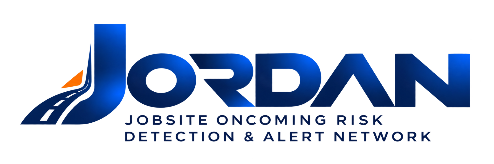
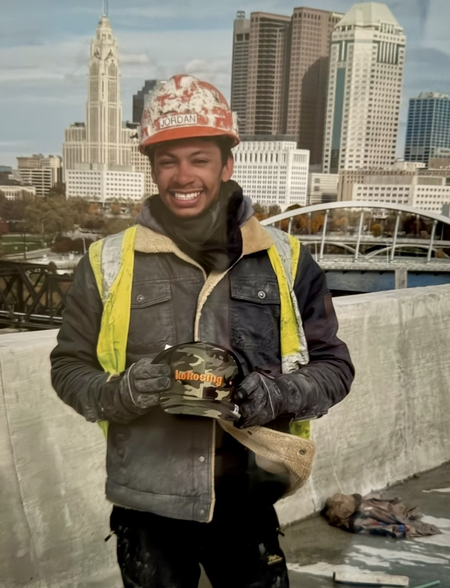

Report
Workers report danger in seconds.
PROJECT JORDAN THOMAS
Project Jordan Thomas is a public initiative developing JORDAN, the Jobsite Oncoming Risk Detection & Alert Network , in memory of Jordan Thomas.
JORDAN is currently in active development.

THE STORY + THE MISSION
Jordan's story is where this project begins. What we build next is about the workers still standing beside traffic.
THE MISSION
On February 28, 2026, Jordan Thomas was killed while working inside a closed construction zone on Interstate 70 in Columbus, Ohio.
Project Jordan Thomas exists because what happened to Jordan should not become another forgotten work-zone statistic.
Read Jordan's story →
THE TECHNOLOGY
A work-zone safety platform being designed to turn field observations into warnings, intelligence, evidence and action.
Workers report danger in seconds.
Immediate threats can warn the crew.
Repeated reports reveal recurring risk.
Safety information should lead somewhere.
BUILDING IN PUBLIC
The development roadmap is public. Follow product decisions, prototypes, engineering work, field testing and progress as JORDAN is built.
PRESS
News interviews, television coverage and public conversations about Jordan, work-zone safety and the push for change are being collected as part of Project Jordan Thomas.
View press coverage →Television interviews, articles and public testimony will be added to the archive.